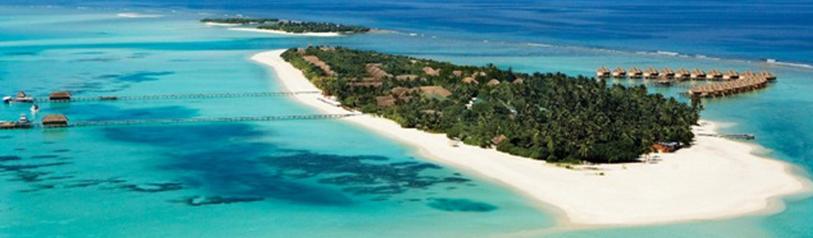

Kanuhura – Maldive 
Kanuhura is a luxury 5-star resort, a member of The Leading Small Hotels of the World, hosted on a thin oval island 1 km long and 200 m wide,
in the northeastern part of the atoll of Lhaviyani, north of Malè.
Kanuhura Malé International Airport can be reached after only 45 minutes flight by seaplane.
Upon arrival guests are greeted by the staff that awaits them on the long wooden pier that reaches the island and then winds in the main hotel on the one hand,
with the swimming pool, spa, restaurants, bars and some Beach House, and on the other, with the center for water sports, bar, disco and other Beach Duplex Villa.
He goes beyond the beach and is divided into two rows of Water Villas & Suites, all overlooking the lagoon, with verandah and direct access to the sea.
The Beach Villa stretching on both sides of the island and overlooking the white sand and turquoise sea.
All villas and suites have spacious bathrooms with outdoor showers and soaking tubs to stone.
The main buildings reflect this atmosphere to perfection: low wood with thatched roofs that open and long imposed on the landscape, are grouped around the swimming pools with bridges in a Japanese style and overlook the beach and lagoon. The decorative elements are Asian - the wood is from New Zealand, the chairs from Vietnam, the ceramics from Thailand and Indonesia fabrics - and mix them to give a feeling of tranquility and elegance.